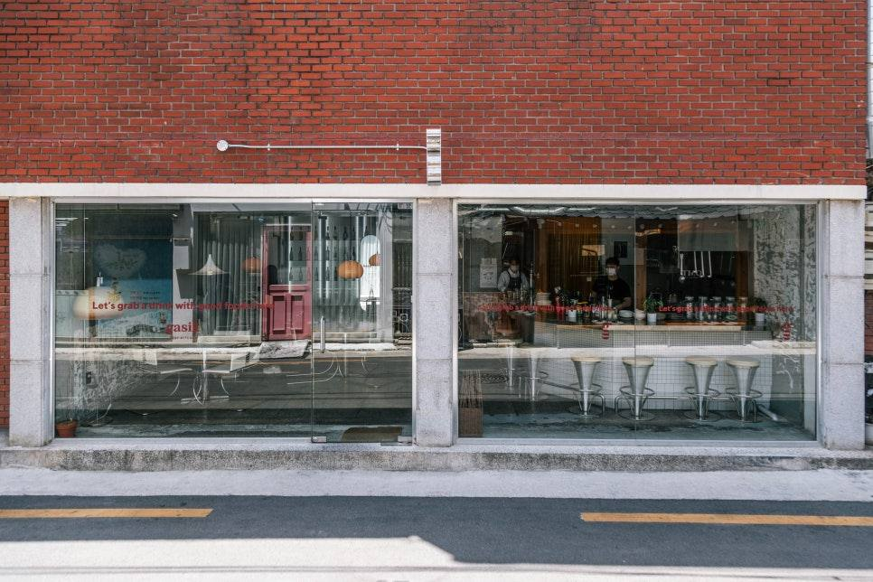
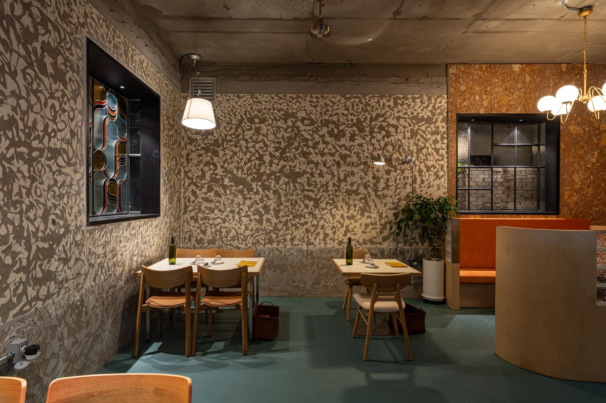

대구 음식점 인테리어, 업종에 맞는 준비부터.
식당은 메뉴와 조리·배식, 고기집은 굽는 방식과 환기, 카페는 제조와 픽업, 술집은 체류와 응대 방식이 공간 계획의 출발점입니다. 이름·간판·메뉴와 공간의 표현도 같은 브랜드 방향에서 정리합니다.
주방 장비와 준비·배식·세척의 흐름, 홀 서비스와 좌석을 함께 검토합니다. 후보 주소의 건물 조건을 확인한 뒤 공사 범위를 정합니다.
식당 공사 범위 확인 →삼겹살집·소고기집 등 메뉴와 굽는 방식에 맞춰 후드·덕트, 직원 작업 공간과 테이블 조건을 확인합니다.
고기집 상세 안내 →장비 목록과 제조·픽업 방식부터 바의 설비, 좌석 구성과 브랜드 콘셉트를 연결합니다.
카페 상세 안내 →대구 술집 인테리어는 주류·안주와 서비스 방식, 대화·음악의 비중, 대기와 이동 경로를 검토합니다. 공간과 개점 준비의 구체적인 질문은 술집 창업·인테리어 가이드에서 확인할 수 있습니다. 와인바 인테리어를 준비한다면 금나리 사례와 바·조명·셀러의 견적 범위도 살펴보세요.
점포가 미정이면 후보 주소와 업종부터 알려주세요. 브랜드 기획·디자인과 공간기획·디렉팅의 범위를 협의하며, 전문 시공은 해당 요건을 갖춘 파트너사가 별도 계약으로 수행할 수 있습니다.
식당 주방 인테리어, 메뉴와 장비부터 배치합니다.
대표 메뉴 몇 가지의 준비·조리·배식 순서를 적고, 냉장고·화구·작업대·세척대가 필요한 위치를 표시하세요. 피크 시간에 조리와 세척이 겹치는 구간을 보면 필요한 통로와 작업대를 가늠할 수 있습니다.
- 새 점포: 사용하려는 장비의 크기와 열원, 전력, 급배수, 배기 경로를 현장 조건과 맞춰 봅니다.
- 기존 식당 리모델링: 남길 후드·덕트와 냉장 장비를 사진에 표시하고, 새 메뉴에도 맞는지는 현장에서 확인합니다.
- 견적을 받을 때: 기기 구입과 설치, 전기·가스·배관 연결, 철거·폐기 비용을 나눠 적어 달라고 요청합니다.
임대차계약 전에 공사가 가능한 점포인지 봅니다.
전력, 급배수, 냉난방, 소방, 외부 간판과 공사 가능 시간은 업종 허가와 예산에 직접 영향을 줍니다.
관리규약, 원상복구 범위, 공용부 사용과 장비 반입 경로도 함께 확인해야 계약 후 예상하지 못한 추가 비용을 줄일 수 있습니다.
업종에 따라 설비 우선순위가 달라집니다.
급배수, 전력, 가스, 배기와 주방 동선을 확인합니다.
대기, 상담, 작업과 수납의 관계를 정리합니다.
시선, 상품 진열, 재고와 결제 동선을 설계합니다.
대구 상가 인테리어 견적은 같은 범위로 비교해야 합니다.
철거, 설비, 소방, 냉난방, 전기 증설, 간판, 가구와 집기의 포함 여부를 항목별로 맞춰 봅니다. 평당 금액 하나보다 제외 항목과 변경 조건을 확인하는 것이 중요합니다.
예를 들어 견적서에 주방 공사가 포함돼 있다면 장비 구입비, 덕트 연장, 전기 증설도 들어 있는지 각각 물어보세요. 기존 식당을 인수한다면 장비·가구 중 점포에 남는 것과 철거할 것을 먼저 적어 두면 두 업체에 같은 조건을 전달할 수 있습니다.
대구 식당 사례를 볼 때, 사진과 수행 범위를 함께 확인하세요.


공식 홈페이지에 소개된 레스토랑 가식은 삼덕·더현대·범어 프로젝트입니다. 가식 소개 페이지에서 위코가 공개한 수행 범위는 브랜드 기획·디자인·공간·광고입니다. 새 프로젝트에서도 같은 업무 전체가 자동으로 포함되는 것은 아닙니다.
내 매장에서는 브랜드 방향, 이름·그래픽과 안내물 중 어떤 결과물이 필요한지 확인합니다.
사진의 분위기와 별개로, 내 메뉴·장비·면적에 필요한 공간계획과 전문 공사 범위를 구분합니다.
공개 프로젝트에는 광고 업무도 포함됩니다. 광고 참여를 전체 인테리어 시공 실적으로 읽지 않도록 수행 범위를 확인하세요.
여기에는 지점별 공사비·공사 기간·매출 성과를 제시하지 않습니다. 공개된 수행 범위 이상의 설비 교체나 시공 실적도 추정하지 않습니다.
내 점포와 비교할 세 가지
- 현재 단계: 신규 창업, 기존 매장 리뉴얼, 업종변경 중 어느 단계인가요?
- 필요한 결과물: 브랜드 방향, 공간계획, 디자인, 진행 조율 중 무엇이 필요한가요?
- 현장 차이: 면적·메뉴·유지할 장비와 건물 조건이 어떻게 다른가요?
업종변경이면 기존 시설 판단표, 주방 견적을 받았다면 장비·공사 연결 범위 비교표를 먼저 확인하세요. 마케팅 실행 안내는 MP Marketing 외부 홈페이지 ↗에서 별도로 볼 수 있습니다.
기존 매장을 인수하거나 영업 중인 곳을 바꾼다면
점포를 인수할 때는 남길 시설과 버릴 집기를 정리하고, 운영 중인 매장은 쉬어야 하는 날과 다시 열 날짜를 먼저 맞춰보세요. 대구 상가 리모델링과 매장 리뉴얼 준비에서 상황별로 견적에 넣을 항목을 비교할 수 있습니다.
대구 상가·식당 상담, 세 가지부터 알려주세요.
- 지역과 단계: 현장 주소 또는 후보 지역, 계약 전·후와 오픈·리뉴얼 여부.
- 공간과 운영: 전용면적, 업종·대표 메뉴, 현재 사진이나 도면 보유 여부.
- 바꾸려는 범위: 유지할 설비·가구, 가장 고민되는 점과 희망 일정.
확인하지 못한 항목은 미정으로 남겨도 됩니다. 사진만으로 설비 상태나 확정 공사비를 판단하지 않으며, 현장 검토와 실제 진행 범위는 상담 후 협의합니다.
자주 묻는 질문
상가 계약 전에 현장 검토가 필요한가요?
업종 운영에 필요한 설비와 건물 조건이 맞지 않으면 공사비와 일정이 크게 달라질 수 있어 사전 확인이 필요합니다.
브랜딩과 인테리어를 같이 진행할 수 있나요?
네. 고객, 브랜드 방향과 운영 기준을 먼저 정리하면 이름·그래픽·공간의 경험을 일관되게 연결할 수 있습니다.
대구에서 기존 식당을 인수하면 인테리어를 어디까지 다시 해야 하나요?
새 메뉴의 조리 방식과 필요한 장비부터 적고, 기존 주방·전기·급배수·환기 중 남길 항목을 표시하세요. 장비를 바꾸는 부분은 연결 공사까지 견적에 넣고, 재사용할 장비는 작동 상태와 이전·세척 비용을 확인합니다. 기존 시설 재사용 판단표에 항목을 나눠 적을 수 있습니다.
대구 상가 인테리어 견적, 점포 계약 전에도 받을 수 있나요?
후보 주소와 전용면적, 평면도, 분전반·배수구·천장 사진, 계획 중인 업종으로 대략적인 공사 범위를 상담할 수 있습니다. 사진으로 확인한 항목과 현장을 봐야 판단할 항목을 나누고, 전기 증설이나 배기 경로처럼 점포 선택을 바꿀 수 있는 조건부터 확인하세요.